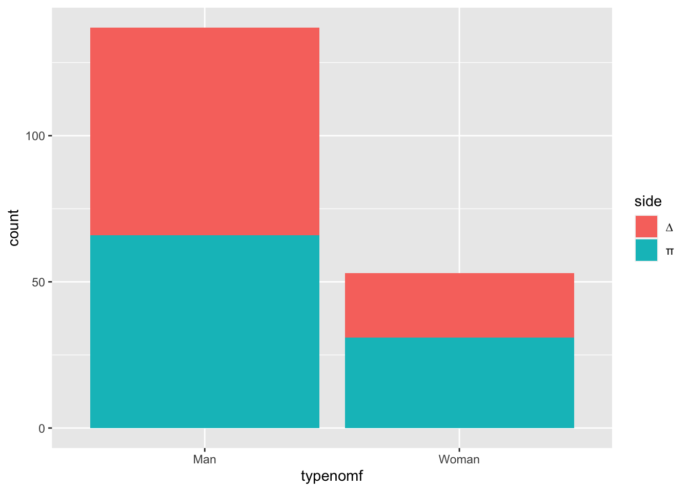

TABLE OF CONTENTS
THE PROJECT FRUG’S POSTMODERN FEMINISM QUEERING POSTMODERN FEMINISM DATASET WOMEN AS CHARACTERS MASCULINE BUSINESSES TRANSACTION TYPE
THE PROJECT
This project is a postmodern feminist analysis of gender in Knapp, Crystal, and Prince’s Problems in Contract Law: Cases and Materials. I use Mary Joe Frug’s methodology in “Re-Reading Contracts: A Feminist Analysis of a Contracts Casebook” with a heavy to explore how gendered individuals and general notions of gender
Problems in Contract Law is an American contracts casebook that attempts, in good faith and with a commercial incentive, to relay the current state and relevant history of American contract law to first-year law students.
This is a descriptive project, but is necessarily political, and comes with a heavy normative undertone. This project compares the ways in which women, as a political population, appear in the casebook differently from men. Most Americans expected women not to participate in the government or the formal economy from the country’s inception to the early twentieth century, and not to occupy public positions of capitalist power until the middle of the twentieth century. There is a massive historical disparity in the relative power of women in public life (again, as a political population) and men (the same), that is slowly edging towards parity.
For better or worse, the casebook does represent this dynamic. Presenting these inequalities in the casebook reflects the general exclusion of women from public life and contracts law for most of American history. The limited universe of American contracts presented in a this casebook provide an interesting venue to examine a snapshot of flawed, gendered, improving, complicated law.
First, I analyze what Frug describes as “woman as characters:” concrete analysis of the individual women in the casebook, how judges choose to write about them, and how editors choose to frame them.
Second, I analyze, in Frug’s words, the “abstract characteristics which we commonly attribute to men [and women] and characteristics of the casebook.” Most interestingly, many businesses in the casebook have a name that communicates masculinity, either through a gendered first name, Bros., or fictional characters like Hercules.
DATASET
Much to the detriment of this project’s usefulness, race is not as measurable in the casebook as gender. There are few people who have names that are clearly European in origin; some of the people with European names are likely to be people of color. Nevertheless, white people likely occupy an enormous proportion of characters in the book. My inability to measure that disparity makes most of this analysis very misleading colorblind. Most people privileged enough to engage in lawsuits, certainly on the plaintiff side, were white for most of American history and continue to be disproportionately white.
20 of 103 cases, or nearly 1 in 5, were decided before 1965, when a federal law prohibiting employment discrimination on the basis of race, color, religion, sex, or national origin finally came into effect and the U.S. ceased legally being a racial apartheid state. 73 of the 103 cases, or just under 3 in 4, were decided before the 21st century.
cases_over_time <- contracts %>%
group_by() %>%
mutate(count = n()) %>%
ungroup %>%
ggplot() +
geom_jitter(width = 0, height = 0.3, aes(year,forplot,alpha=0.05,text = paste(sep = "",simplecite,", ",year)))## Warning: Ignoring unknown aesthetics: textggplotly(cases_over_time, tooltip = "text") So this project looks at women and men in the case book, but it’s looking at much less than that: They’re all American, probably mostly white, and likely much more complicated in their personal experiences of gender, race, law, and family than the casebook represents. Gender is so complicated that I devoted a tab above to it (see Queering Postmodern Feminism.) I use the words men and women, but with reservations.
So, with all that said:
I collected all individual people and businesses that appear as parties or representatives of parties in all opinions included in the casebook.
I coded the individual people for gender by making assumptions based on traditional patterns in gendered names and pronouns. In all, I counted 202 individuals appearing as parties themselves or as prominent representatives of organizations in the facts of the opinions.
parties %>%
filter(typenomf == "Man" | typenomf == "Woman") %>%
ggplot +
geom_bar(aes(typenomf, fill = side))
gendertotaltable %>%
knitr::kable()| gender | πs | ∆s | parties | percentage |
|---|---|---|---|---|
| man | 66 | 70 | 136 | 67% |
| woman | 31 | 22 | 53 | 26% |
| unknown | 7 | 6 | 13 | 6% |
| 202 |
Interestingly, women are slightly more likely to be on the plaintiff side, at 58% (31 of 53) to men’s 48% (. But it’s not a significant difference.
TRANSACTION TYPE
I coded very roughly for the type of transaction that gave rise to the legal dispute. The label ‘Business’ refers to two or more for-profit organizations interacting with each other in the course of business. The label ‘Consumer’ refers to transactions in which an individual or several individuals purchase goods or service from organization/s The label ‘Employee’ refers to transasctions in which an individual in2teracts as a former/potential employee of an organization/s The label ‘Family’ really means more interpersonal – the performances induced by these contracts are behavioral in nature, i.e. withholding smoking, being a good little nephew, transfer of money among relatives. The label ‘Property’ refers to transactions between individuals over sale/transfer of property, not individuals interacting with homebuilders, which I counted as a consumer transaction.